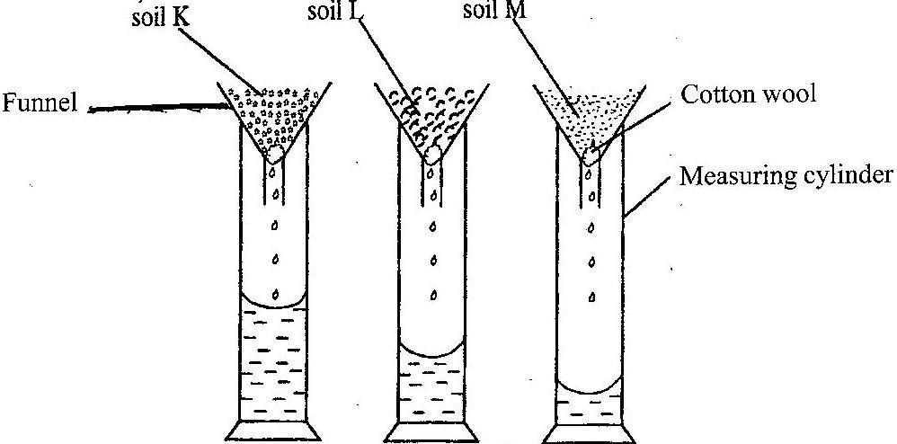

2016 BECE Science Past Questions – Paper Two
Study the diagram and answer the questions that follow

(i) What is the aim of the experiment?
(ii) Which soil has the highest rate of drainage?
(iii) Which soil has the highest water retention capacity?
(iv) Which soil is most likely to lose water and dry faster after rainfall?
(v) Which soil is most likely to be waterlogged after rainfall?
(vi) Which of the soil types would be suitable for maize cultivation?
The diagram below illustrates hazard symbols labelled I, II, III and IV.
Study the diagram carefully and answer the questions that follow.

(i) What does each of the symbols labelled I, II, III and IV represent?
(ii) Name one substance each that is associated with:
(α) I;
(β) II;
(γ) III.
(iii) Name a place where the hazard symbol labelled IV is often displayed
(iv) Which of the symbol(s) is / are found on chemical containers?
(c)The diagrams below are illustrations of devices used to do work easily
Study the diagrams and answer the questions that follow
(i) Give a general name for the devices.
(ii) Identify each of the devices labelled A, B, C and D.
(iii) Name the parts labelled I, II and III of device A when it is considered as a lever.
(iv) What does the arrow represent in the device labelled B?
(v) Name the type of work done with each of the devices labelled:
(α) C;
(β) D;
(d) The diagram below illustrates the digestive system in humans.
Study the diagram carefully and answer the questions that follow
(i) Name each of the parts labelled I, II, III, IV and V
(ii) Name the part(s) of the digestive system where
(α) digestion of food substances occur
(β) digested food is absorbed into the bloodstream
(iii) Name the end-products of the digestion that is absorbed into the bloodstream
(a) Name four weather measuring instruments.
(b) Name the stages in the life cycle of a mosquito.
(c) (i) List two properties of water
(ii) Explain why it is advisable to wash clothes with soft water
(d) State three ways in which soil profile is important.
(a) List three modes of heat transfer.
(b) (i) What is a deficiency disease?
(ii) Name three deficiency diseases in humans.
(c) State two ways in which each of the following factors cause depletion of soil resources:
(i) burning
(ii) leaching
(d) List three processes that can change matter from one state to another.
(a) (i) What is a satellite?
(ii) Give three uses of artificial satellites.
(b) State the composition of each of the following alloys:
(i) brass
(ii) steel
(iv) bronze
(c) Name three cultural practices used in vegetable production.
(d) List four parts of the respiratory system in humans..
(a) (i) What is a force?
(ii) State two ways in which forces could affect a body
(b) (i) What is a chemical change?
(ii) State three differences between chemical change and physical change.
(c) Name three physical properties of soil.
(d) Mention three diseases of the circulatory system in humans.
(a) Write the systematic name for each of the following compounds:
(i) H2O
(ii) MgO
(iii) CaO
(iv) CaCl2
(b) Name the instrument used in measuring the following:
(i) length of a rope
(ii) mass of a stone
(iii) temperature of a liquid
(iv) volume of a liquid
(c) List three factors that influence vegetable crop production.
(d) Name four stages in the life cycle of a flowering plant.